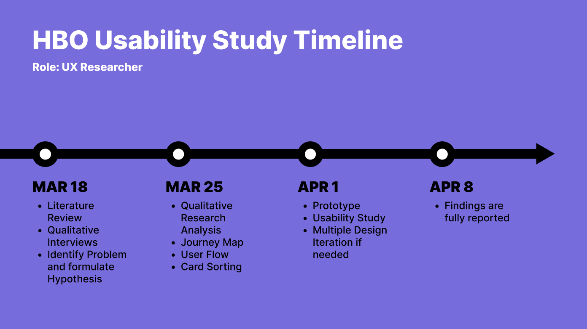

HBO Case Study
In this student project, improvements are made to help users find new content.

THE GOAL
How can we improve HBO’s UI to optimize user search for new content?
THE PROCESS
First off, we wanted to take this personal project and treat it as if we were UX researcher's for HBO. We aimed to understand our stakeholders, users and existing solutions. To holistically understand the problem space and our user needs, my team member and I created a research plan that incorporated the following methods.
For week 1 we decided to divide our research into two phases: a research phase where we understood the context of the problem through an in-depth review and a secondary research phase where we conducted 5 user 1 on 1 interviews. We synthesized the collected data into an affinity map that helped us build a user flow, a user persona, a journey map, and design concepts.
THE PROBLEM
Based on assumpitons, HBO’s current UI does not provide enough information within the preview sections of its content and lacks diversity in their categories sections. This deters users from browsing/viewing the content within this streaming platform. How can we improve the UI and overall user experience in a simple and organized way to encourage users to engage with this platform more often? Over the next three weeks, Umika and I will run an in-depth research study to understand the users' needs, attitudes, and preferences towards searching in HBO Max's platform.
See how there's no trailer for the Creed movie after clicking on the movie. The user has to take an extra step to read or click on the movie to know if theyre interested. Scroll down to see how our research and interviews back up our assumption.
LITERATURE
We gathered data online that was focused on google, app reviews, YouTube videos, and surveys. The data collected focused on HBO's quality on different platforms from the phone app to the TV.
SEMI-STRUCTURED INTERVIEWS
Once we gathered an array of insights from our research phase, we designed our semi-structured interview to gain more in-depth information about the habits, attitudes, and preferences of searching for new content on HBO Max. We decided to focus on users that have an HBO subscription over users who don't as we wanted to focus on finding the problem that constantly plague the user. We also made sure to bring in users that have multiple streaming services so they can give us an objective outlook on what they prefer in a streaming service.
Five 20-minute qualitative interviews with Users that own an HBO subscription:
Qualitative User Interview Guide Below:
Check out some of the quotes from the interview above.
FINDINGS
Based on the affinity map, we generated the following insights by grouping similar notes from our separate research. My partner was able to complete the affinity map from the research she collected to the left while I completed an affinity map focused on the interviews to the right.

USER PERSONA
After creating the affinity map we were able to narrow down our research question to focus on the issues with searching for content. We then created a persona that captured the essence of the users we've researched and interviewed. We also formed a journey map to understand their needs and frustrations.
JOURNEY MAP
USER FLOW
After creating the User Persona and Journey Map a User Flow was created to find any inconsistencies in the search process. The User flow also helps highlight the issue that our persona faces in their journey map above once they search for content.
CARD SORT
A Hybrid card sort hosted on Mural was sent out to 5 different participants. In the card sort there was 34 set categories from HBO and 20 new optional categories. Each participant was asked to put each category they believe that should be used in a separate bucket. There was also 3 unique buckets that contained Add Category, Get Rid of Category, and Group Together. Participants also had the option of creating their own category.
Results: Out of the 54 categories 19 Categories were chosen consistently throughout the 5 participants. I only accepted categories that scored at 80% or higher which gave us the list below. I also decided to showcase the 14 rejected categories that scored less than or equal to 20%.
PROTOTYPE
Using our acquired user needs and design implications from our findings, we developed our first iteration of a prototype to answer our research question. How can we improve HBO’s UI to accommodate user search for new content? We created a little mockup sketch to envision what the hover preview would look like. We also took into account one major flaw HBO Max has that involves with their slow load ups. With online research we found that out of all the services HBO Max has a slow load up due to the title card size and fidelity.
This sizing difference creates a slower load up which can cause issue for HBO's site if there's a poor connection. Since adding pre loaded titles doesn't solve our main question and we have no contact with the software engineering team we can take this into account and limit our preview size.
Amazon prime contains multiple versions of a preview feature that showcase the movies they hold. One version fits the same horizontal title card image that HBO MAX contains. We decided to extend it out 2.5 times its usual size so the users can see the trailer and read the key descriptives HBO has listed on their content page below.
Hover Preview Play Button Watch Later Button Trailer Description Rating Movie Page Expands 2.5x Year Content Length
USABILITY STUDY
Upon completing our prototype we then conducted 5 remote think-aloud task-based usability tests. Our main goal with the usability tests was to assess how well users can complete the key task of searching new content in the HBO MAX application. A Paired T Test analysis was ran for the UMUX surveys. The results were significant at P Value = 0.0006 with a Mean Difference of 36.83 between the current design to the prototype. The Confidence interval on the difference of scores goes from 24.29 to 49.38, at most that is almost double the average mean score of the current design at 49.
QUALITATIVE RESULTS
Out of the 5 participants that did the randomized within study they stated they preferred the new design in the exit questions. All participants gave recommendations to the current and prototype designs. Current Design Recommendations that were constant between participants: - Hover Preview - A Bigger Trailer Button Prototype Recommendations that were constant between participants: - Hover Preview Limit - Shorter Clips instead of a trailer
REFLECTION
With the recommendations and the UMUX scores we were able to decide that the prototype did not need a second iteration. Since the recommendations we received in our qualitative interviews can be applied for a better user experience we also had to be aware that more research would have to be done. The hover preview limit and shorter clips recommendation would be a whole study in itself.
Check out my interactive prototype in the slides!